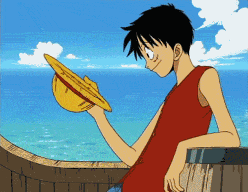
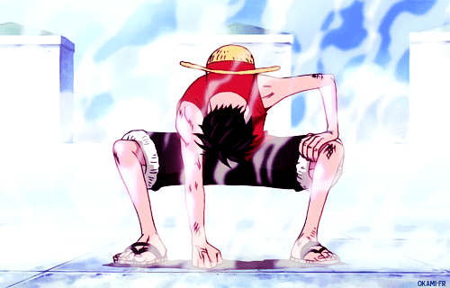
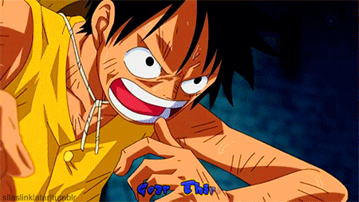
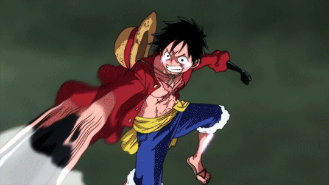

One Piece — Eiichiro Oda
Monkey D. Luffy
THE GEAR JOURNEY
Dari Gear 1 hingga Gear 5 — perjalanan epik Luffy menguasai kekuatan buah iblisnya. ✦ Klik kartu untuk melihat info lengkap setiap Gear
⚡
Perjalanan 5 Gear
Klik kartu untuk detail lengkap

GEAR · 01
Base Form
Kemampuan dasar Gomu Gomu no Mi — tubuh elastis seperti karet.
🍎 Gomu Gomu no Mi
✦ Detail

GEAR · 02
Jet Mode
Memompa darah lebih cepat — tubuh beruap merah, kecepatan ekstrem.
🔥 Kecepatan Uap
✦ Detail

GEAR · 03
Giant Mode
Meniup udara ke dalam tulang — anggota tubuh membesar seperti raksasa.
🦴 Tinju Raksasa
✦ Detail

GEAR · 04
Boundman
Menggabungkan Haki Senjata dengan elastisitas — terbang dan bertarung.
⚫ Haki + Elastis
✦ Detail

GEAR · 05
Sun God Nika
Kebangkitan sejati — realita berubah layaknya kartun tanpa batas.
☀ Sun God Awakening
✦ Detail
☀
"Aku akan menjadi Raja Bajak Laut!"— MONKEY D. LUFFY